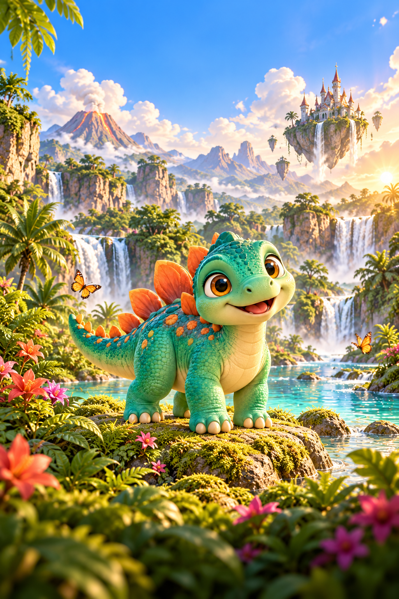
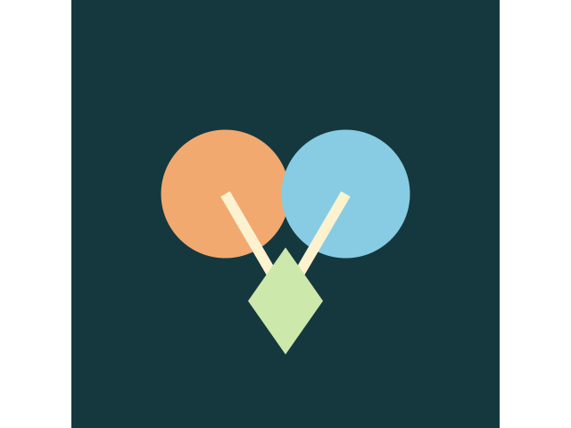
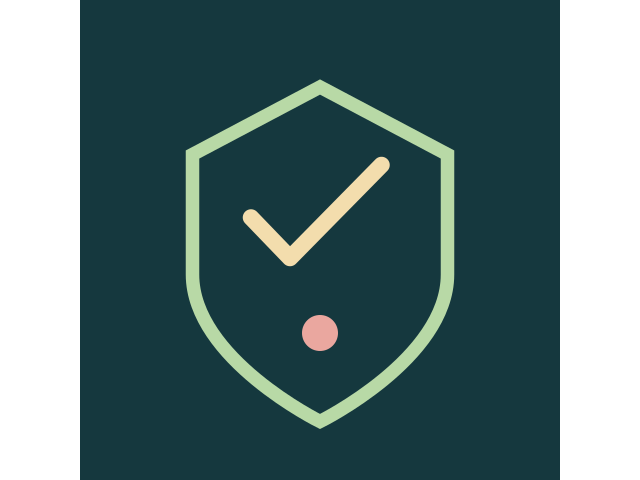
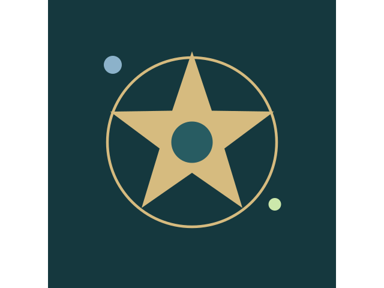

FÜR KLEINE ENTDECKER
FÜR KLEINE ENTDECKERSPIELWELT 01
LumoKleine Entdecker
Zählen, merken, malen – und dabei die Welt ein bisschen besser kennenlernen. Lumo schenkt kleinen Entdeckern Raum zum Ausprobieren und Freude an jedem kleinen Schritt.
Lumo kennenlernen✦ INDEPENDENT SPIRIT. SHARED IMAGINATION.
Für dieses eine „Noch einmal!“. Für leuchtende Augen. Und für die Freude, etwas Neues zu entdecken.
Entdecke unsere SpieleMade with love, human creativity & AI skills.
01 / UNSERE SPIELWELTEN
Mal sanft und neugierig. Mal mitten ins Abenteuer. Immer mit dem Wunsch, dass du gerne wiederkommst.
FÜR KLEINE ENTDECKERZählen, merken, malen – und dabei die Welt ein bisschen besser kennenlernen. Lumo schenkt kleinen Entdeckern Raum zum Ausprobieren und Freude an jedem kleinen Schritt.
Lumo kennenlernen BEREIT FÜR DEIN ABENTEUER?
BEREIT FÜR DEIN ABENTEUER?Da draußen wartet mehr. Folge Mira und Nox zwischen die Sterne, stelle dich neuen Herausforderungen und mach aus dem nächsten Versuch deinen nächsten großen Spielmoment.
Auf zu Ring Breaker IN ENTWICKLUNG
IN ENTWICKLUNGEin Muffin ist erst der Anfang. Aus kleinen Klicks wächst deine eigene Backwelt – mit neuen Ideen, fleißigen Helfern und viel Freude am nächsten Schritt.
Muffin Club entdecken
IN ENTWICKLUNGMit Milo und seinen Freunden werden aus kleinen Puzzleteilen große Entdeckungen. Sechs fantasievolle Welten laden zum Ausprobieren und Wiederentdecken ein.
Puzzaluna kennenlernenAUS UNSERER WERKSTATT
Vom ersten spielbaren Versuch bis zur neuen Abenteuerwelt: Auch diese Projekte gehören zu KDS.
 PROTOTYP
PROTOTYPWAHRNEHMEN & ERINNERN
Welche Farbe war das? Wie klang der Ton? Wie fühlte sich der Rhythmus an?
Projekt entdecken
PROTOTYP IN ARBEITFUSION & STRATEGIE
Neue Kräfte entstehen dort, wo du Elemente zusammenbringst.
Projekt entdecken
FRÜHER PROTOTYPTAKTIK & VERTEIDIGUNG
Platziere deine Verteidiger, finde die richtige Aufstellung und stelle dich der nächsten Welle.
Projekt entdecken
IN ENTWICKLUNGFANTASY & SQUAD-RPG
Fünf Helden, neue Herausforderungen und eine Fantasywelt, die mit deinem Team wächst.
Projekt entdecken02 / DAS IST KDS
Wir lieben die kleinen Dinge, die einen Unterschied machen: eine Figur, die dich zum Lächeln bringt. Ein Moment, in dem es klickt. Eine Welt, in die du gerne zurückkehrst.
Bei Kaya Digital Studio treffen menschliche Ideen auf KI-Können. Mit Neugier, Sorgfalt und viel Herz machen wir daraus Spielwelten mit eigener Persönlichkeit.
Made with love, human creativity & AI skills.
03 / WIR HÖREN ZU
Ob Lob, Wunsch oder ein Spielmoment, der noch nicht rundläuft – wir freuen uns auf deine Nachricht.